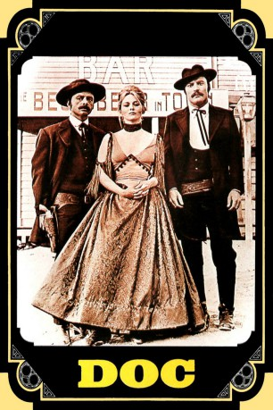

#5952 Doc
Alternativ: 'Doc'
 
 IMDB-Wertung: 6.1 / 10
IMDB-Wertung: 6.1 / 10  Metascore: 0
Metascore: 0 
In der Westernstadt Tombstone hat der Outlaw Clanton das Sagen. In Wyatt Earp und Doc Holliday findet er harte Widersacher. Als der neue Sheriff gewählt werden soll, versucht Clanton einen Strohmann durchzubringen. Aber auch Wyatt Earp bekundet Interesse an dem Amt.
Jahr: 1971
Dauer: 95 Minuten
FSK: 16
Land: USA Studio: United ArtistsTonspuren:
Untertitel:
Auflösung: 1080p (1920x1040) Größe: 7393 MB
Genre: Western
Regisseur: Frank Perry
Drehbuch: Takeharu Sakurai
Soundtrack:
Darsteller:
 Stacy Keach als Doc Holliday
Stacy Keach als Doc Holliday Faye Dunaway als Katie Elder
Faye Dunaway als Katie Elder Harris Yulin als Wyatt Earp
Harris Yulin als Wyatt Earp- Richard McKenzie als Behan
- Penelope Allen als Mattie Earp
 Marshall Efron als Mexican Bartender
Marshall Efron als Mexican Bartender Dan van Husen als Clanton Cowboy , uncredited
Dan van Husen als Clanton Cowboy , uncredited- Michael Witney als Ike Clanton
- Denver John Collins als The Kid
- Dan Greenburg als Clum
- John Scanlon als Bartlett
- John Bottoms als Virgil Earp
- Philip Shafer als Morgan Earp
- Ferdinand Zogbaum als James Earp
- Hedy Sontag als Alley Earp
 James Greene als Frank McLowery
James Greene als Frank McLowery Antonia Rey als Concha
Antonia Rey als Concha- Fred Dennis als Johnny Ringo
- Bruce M. Fischer als Billy Clanton
- Gene Collins als Hotel Clerk
- Vivian Allen als Whore , uncredited
- Florencio Amarilla als Man , uncredited
 Luis Barboo als (uncredited
Luis Barboo als (uncredited- Per Barclay als Clanton Cowboy , uncredited
- Henri Bidon als Clanton Cowboy , uncredited
- Sharon Fruitin als Whore , uncredited
- Mart Hulswit als Reverend Foster , uncredited
- Gene Reyes als Wong, Chinese Opium Den Owner , uncredited
- Lucy Tiller als Whore , uncredited
Datei: X:\HD-Western-1960-1979\Doc (1971, FSK16, 1920x1040).mkv seit 09.04.2017
Festplatte: HD Eastern+Western
 Es gibt insgesamt 110 Filme in der Gruppe 'HD-Western-1960-1979'
Es gibt insgesamt 110 Filme in der Gruppe 'HD-Western-1960-1979'